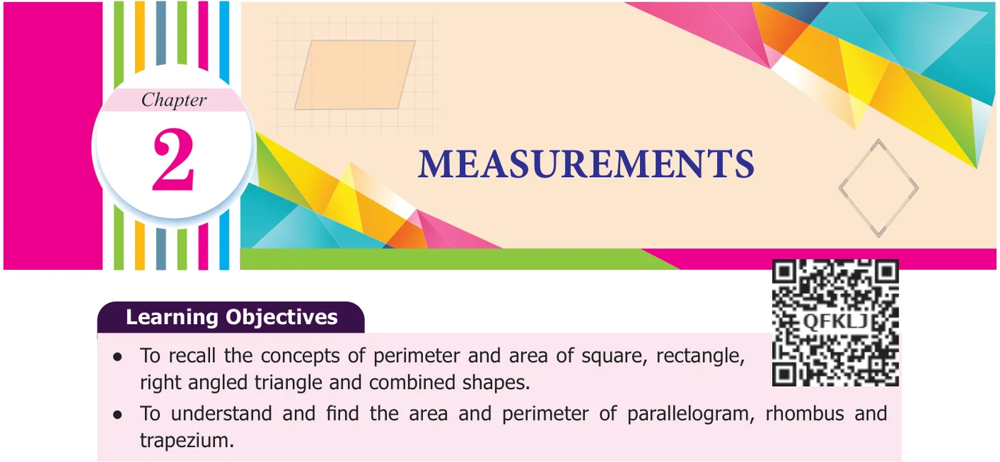
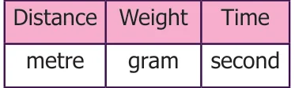
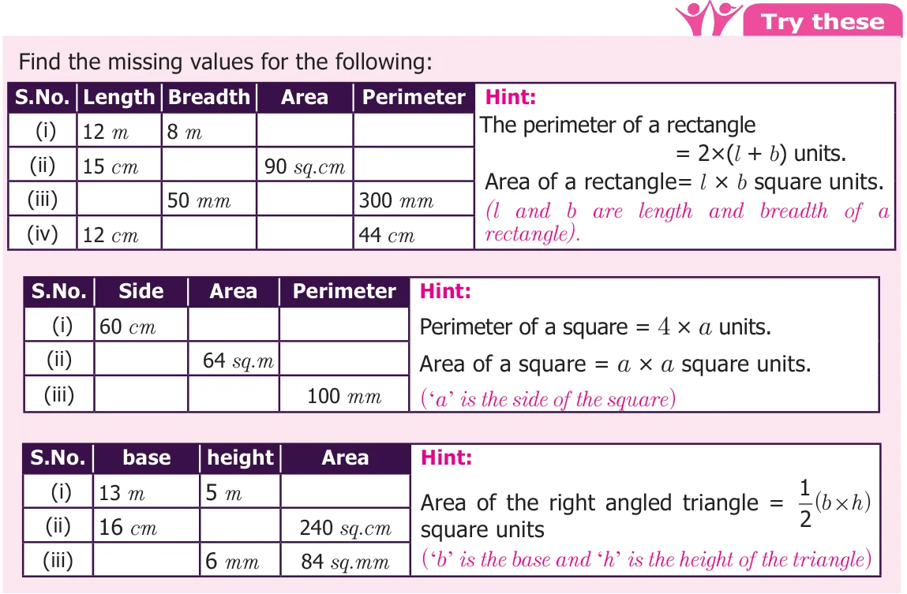

Recap
In ancient days people used non-standardised measures such as cubit, king's foot, king's arm and yard etc. Later, people realised the need for standardised units and International System of Units which were introduced in the year 1971. The SI Units of various measures are shown in the table In Class VI, we studied about area and perimeter of rectangle, square and right angled triangle. Perimeter is the distance around and Area is the region occupied by the closed shape.

